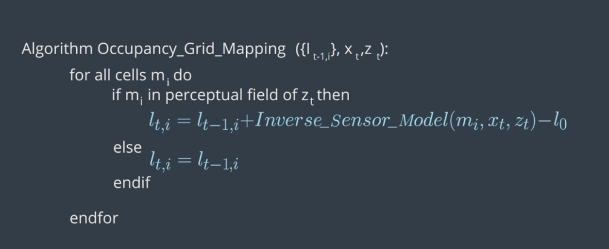
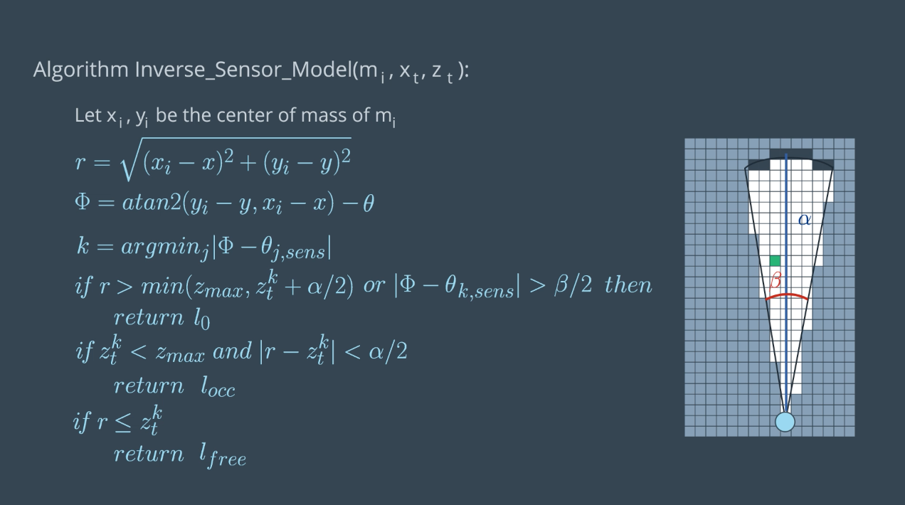
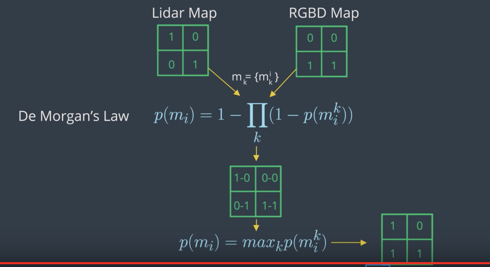
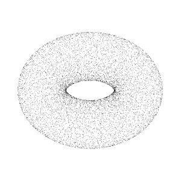

Introduction to SLAM
This section is about how robots learn to map their envinronment and SLAM (Simultaneous Localization And Mapping). In localization, we estimate the robot's pose given the map of the environment. So, given the map and robot's access to sensor and movement, it can pose. But, what if the map of environment doesn't exist? This can happen either to a changing environment or maybe just the fact that map doesn't exist. In such a case, the robot will have to construct a map. This leads us to robotic mapping.
Mapping: In mapping, the robot produces a map of the environment given the its pose(s). Therefore, given the pose and access to sensor and movement data, robot creates a map of the surrounding. However, in real world, even knowing the pose can be uncommon. This is where SLAM comes in.
SLAM: with access to only sensor and movement data, the bot must simultaneously estimate the pose and produce the map of the environment and localizing itself relative to the map.
To recap, in localization, assuming the map, bot estimates its pose whereas in mapping, assuming the pose, the bot estimates the environment.
Challenge in mapping: Pose usually consists of few variables (depends on the robot) that describe the state. But, mapping happens in continuous space, so there is infinite possibilities. Combine this with the uncertainties present in perception and the mapping task becomes even more challenging. There are also some other challenges. For example, the geometry of some of the surrounding objects might look alike and repeated throughout the environment (e.g. car driving in a street where similar trees are planted).
There are number of algorithms for mapping. Here, we focus on Occupancy Grid Mapping algorithm. It divides the environment into finite number of grid cells. By estimating the state of each individual cell, it'll come up with a map of environment.
Next, we move to SLAM. In SLAM, the robot must create the map while simultaneously localizing itself relative to the map. This is more challenging than both localization and mapping since neither the map nor the pose are provided. The existing uncertainty in both map and pose, make the robot's estimate of both correlated. In another words, the accuracy of the map depends on the accuracy of localization and vice versa. SLAM is often called the "chicken or egg" problem. The map is needed for localization and the robot's pose needed for mapping. This challenge is fundamental to robotics. For robots to be useful, they must be able to move around the environment they've never seen before (e.g. robot vacuum cleaner or self-driving cars).
SLAM Algorithms:
- Extended Kalman Filter SLAM (EKF)
- Sparse Extended Information Filter (SEIF)
- Extended Information Form (EIF)
- FastSLAM
- GraphSLAM
We'll be covering "FastSLAM" and "GraphSLAM" here.
Occupancy Grid Mapping
Localization:
- Assumption: Known Map
- Estimation: Robot's Trajectory
Mapping:
- Assumption: Robot's Trajectory
- Estimation: Map
Here, we'll learn how to map an environment with the Occupancy Grid Mapping algorithm!
The importance of mapping: Mapping is important because environment is dynamic. Even with a given map, there's always a chance that something changes. So, the robot needs capability to simulatneously update the map.
Mapping challenges:
There are two main challenges with mapping:
- Unknown Map and Poses: Both map and poses are unknown to us, so we either have to assume the map and estimate the pose or assume the pose and estimate the map and localize robot with respect to it. Estimating the map is a challenging problem because of the large number of variables. This can be solved using the occupancy grid algorithm. Estimating pose and map when both are unknown will be covered in SLAM.
- Hypothesis space is huge: This is because the hypothesis is huge, so when robots are deployed into an open environment where the robot has to sense an infinite number of objects. The occupancy grid mapping provides a discrete representation of the map. But even with that approximation, the space of all possible maps will be large. So, the challenge is to estimate the full posterior maps for maps with high dimensional spaces. The Bayes posterior approach used in localization will diverge. An extension to it need to be used to accomodate the huge hypothesis space.
To map an environment, we need information about walls and objects. For example, we can deploy a robot with a laser range finder sensor. The robot collects sensory information to detect obstacle around it. By using one of the mapping algorithms, we can group this data into a resulting map. However, there are difficulties in using this data as follows:
- Size: mapping large spaces is difficult because there's large amonut of data needs to be processed. The robot has to collect the information from all the sensors, combine them all to form a map and localize the robot every moment. This becomes particularly challenging when the size of the map is larger than the robot's perceptual range.
- Noise: There is always noise associated with sensory data, which needs to be filtered.
- Perceptual ambiguity: The ambiguity occurs when two places look alike. So, the robot needs to know at which point it passed which one. This is particularly important when robot travels in cyclic manner. In cyclic travels, the odometry accumulate errors and at the end of the cycle the error is large.
Mapping with known poses
In mapping with known poses, poses (X) are known, we also have the measurements (Z). Then, using a mapping algorithm (say occupancy grid mapping), we can estimate the posterior map given the noisy measurements and known poses. However, in most robotic applications, the odometry dats is noisy, so the robot poses are unknown to us. So, why mapping is necessary under such a situation? Mapping usually happens after SLAM. So, the power of mapping is its post-processing. In SLAM, the problem changes from mapping with known poses to mapping with unknown poses. During SLAM, the robot will build a map of the environment, localize itself with respect to the map. After SLAM, the occupancy grid algorithm uses the exact poses filtered from SLAM. Then, with the known poses from SLAM and noisy measurements, generates a map for path planning and navigation.
Posterior Probability
Going back to the graphical model of mapping with known poses, our goal is to implement a mapping algorithm and estimate the map given noisy measurements and assuming known poses.
The Mapping with Known Poses problem can be represented with P(m|Z_{1:t}, X_{1:t}) function. With this function, we can compute the posterior over the map given all the measurements up to time t and all the poses up to time t represented by the robot trajectory.
In estimating the map, we’ll exclude the controls u since the robot path is provided to us from SLAM. However, keep in mind that the robot controls will be included later in SLAM to estimate the robot’s trajectory.

2D maps:
For now, we will only estimate the posterior for two-dimensional maps. In the real world, a mobile robot with a two-dimensional laser rangefinder sensor is generally deployed on a flat surface to capture a slice of the 3D world. Those two-dimensional slices will be merged at each instant and partitioned into grid cells to estimate the posterior through the occupancy grid mapping algorithm. Three-dimensional maps can also be estimated through the occupancy grid algorithm, but at much higher computational memory because of the large number of noisy three-dimensional measurements that need to be filtered out.
Probability equations:
- Localization:
P(X_{1:t}|u_{1:t}, m, Z_{1:t}) - Mapping:
P(m|X_{1:t}, Z_{1:t}) - SLAM:
P(X_{1:t}, m|u_{1:t}, Z_{1:t})
Grid Cells
To estimate the posterior map, the occupancy grid will uniformly partition the two-dimensional space in a finite number of grid cells. Each of the grid cells will hold the binary random value that corresponds to the location it covers. Based on the measurement data, the grid will be filled with zeros and ones. If the laser range finder detects an obstacle, the cell will be considered occupied and its value will be one. Therefore, in a 2D space, number of maps = 2^cells.
See the video here.
Computing the Posterior
First Approach: P(m|X_{1:t}, Z_{1:t})
We just saw that maps have high dimensionality so it will be too pricey in terms of computational memory to compute the posterior under this first approach.
Second Approach: P(m_{i}|X_{1:t}, Z_{1:t})
A second or better approach to estimating the posterior map is to decompose this problem into many separate problems. In each of these problems, we will compute the posterior map m_{i} at each instant. However, this approach still presents some drawbacks because we are computing the probability of each cell independently. Thus, we still need to find a different approach that addresses the dependencies between neighboring cells.
Third Approach: Π_{i} (P(m_{i}|X_{1:t}, Z_{1:t}))
Now, the third approach is the best approach to computing the posterior map by relating cells and overcoming the huge computational memory, is to estimate the map with the product of marginals or factorization.

Filtering
So far, we managed to calculate the probability of grid cells using the factorization method. Due to factorization, we are now solving a binary estimation problem in which grid cells hold a static (state of system does not change during sensing) state that do not change over time. Locally, a filter to this problem exists, and is known as Binary Bayes Filter. It solves the static problem by taking log odds ratio of the belief.
With static state, the belief is now a function of the measurements only. Depending on the measurement values reflected, the state of the grid cell is updated. This belief is known by inverse measurement model, which represents the binary state of grid cells with respect to measurements. The inverse measurement model is generally used when measurements are more complex than the binary static state. For example, assume a mobile robot equipped with an RGB-D camera wants to estimate if a door is open or closed. The field of measurements represented by the camera image is huge compared to a simple binary state of the door either open or close. In such situations, it's always easier to use an inverse sensor model than a forward sensor model. The Binary Bayes Filter will solve the inverse measurement model with the log odds ratio representation. The advantage of using a log odds ratio representation is to avoid probability instabilities near zero or one. Another advantage relates to system speed, accuracy, and simplicity. Check out these two sources for more information on log probability and numerical stability:

See the video here.
Forward vs. Inverse Measurement Model
Forward Measurement Model - P(z1:t| x): Estimating a posterior over the measurement given the system state.
Inverse Measurement Model - P(x | z1:t): Estimating a posterior over the system state given the measurement.
The inverse measurement model is generally used when measurements are more complex than the system's state.
Binary Bayes Filter Algorithm
Input
The binary Bayes filter algorithm computes the log odds of the posterior belief denoted by l_t. Initially, the filter takes the previous log odds ratio of the belief t-1 and the measurements z_t as parameters.
Computation
Then, the filter computes the new posterior belief of the system l_t by adding the previous belief l_{t-1} to the log odds ratio of the inverse measurement model and subtracting the prior probability state also known by initial belief. The initial belief represents the initial state of the system before taking any sensor measurements into consideration.
Output
Finally, the algorithm returns the posterior belief of the system l_t, and a new iteration cycle begins.
Occupancy Grid Mapping Algorithm
Now, let's code the algorithm in C++.
Below, is the pseudo algorithm:


Also, what this video for a detailed explanation.
Now, let's assume a robot equipped with eight sonar rangefinder sensors circulates in an environment to map it. This robot is provided with its exact poses at each timestamp. The code structure is as follows:
Data Files
measurement.txt: The measurements from the sonar rangefinder sensors attached to the robot at each time stamp recorded over a period of 413 seconds. (timestamp, measurement 1:8).poses.txt: The exact robot poses at each timestamp recorded over a period of 413 seconds. (timestamp, x, y, ϴ).
Global Functions
inverseSensorModel(): We'll code this function second after doing the inverse sensor model for sonar rangefinder sensors.occupancyGridMapping(): We'll code this function here first.
Main Function
File Scan: Scanning both the measurement and poses files to retrieve the values. At each time stamp, the values are passed to the occupancy grid mapping function.Display Map: After processing all the measurements and poses, the map is displayed.
Here are the steps to write the occupancyGridMapping() function:
- Generate a grid (size 300x150) and then loop through all the cells.
- Inside the loop, compute the center of mass of each cell
x_{i}andy_{i}. - Inside the loop, check if each cell falls under the perceptual field of the measurement.
NOTE: A cell would usually fall under the perceptual field of the measurements if the distance between the cell centroid and the robot pose is smaller or equal than the maximum measurements Zmax.
Find the codes here
Inverse Sensor Model
Inverse sensor model helps to determine probability for the cells on the border. Because they're partially observed, it's hard to calculate their probabilities.
Here is the pseudo algorithm for the inverse sensor model:

See the video here.
Summary of notations for the sonar rangefinder inverse sensor model:
m_i: Map at instant i or current cell that is being processedx_i, y_i: Center of mass of the current cellm_ir: Range of the center of mass computed with respect to robot pose and center of massk: The sonar rangefinder cone that best aligns with the cell being considered computed with respect to the robot pose(x,y,θ), center of mass(x_i,y_i), and sensor angle.β: Opening angle of the conical region formed out of the measurement beams.α: Width of obstacles which is almost equal to the size of a cell. Please not that alpha is not the width of the conical region as the video mention but instead it's the width of a cell.
The inverseSensorModel() has two separate tasks:
- compute
randphi - Evaluate three different cases of algorithm
Find the codes here
Generate the Map
Mapping
So far, we’ve coded the Occupancy Grid Mapping algorithm in C++ and generated an occupancy grid map 2D vector. Now, we'll code a visualization function that will loop through each cell. Then, we'll differentiate between occupied, free, and unknown cells depending on their log odds value. And, finally, we'll plot each cell on a graph to generate the map.
Mapping Lab
- Clone the lab from Github:
$ cd /home/workspace/ $ git clone https://github.com/udacity/RoboND-OccupancyGridMappingAlgorithm
- Next, edit the
main.cpp:
void visualization() { //TODO: Initialize a plot named Map of size 300x150 //TODO: Loop over the log odds values of the cells and plot each cell state. //Unkown state: green color, occupied state: black color, and free state: red color //TODO: Save the image and close the plot }
Here are some helpful commands you can use to generate plots with the matplotlib library:
- Set Title:
plt::title("Your Title"); - Set Limits:
plt::xlim(x-axis lower limit, x-axis upper limit ); - Plot Data:
plt::plot({ x-value }, { y-value }, "Color and Shape"); - Save Plot:
plt::save("File name and directory"); - Close Plot:
plt::clf();
Check out this link for more information on the matplotlib C++ library. For information regarding the plot color and shape refer to the LineSpec and LineColor section of the MATLAB documentation.
- Then, compile the program:
$ cd RoboND-OccupancyGridMappingAlgorithm/ $ rm -rf Images/* #Delete the folder content and not the folder itself! $ g++ main.cpp -o app -std=c++11 -I/usr/include/python2.7 -lpython2.7
- Finally run the program:
$ ./app
If you get a warning regarding the matplotlib library, just ignore it.
Now, wait for the program to generate the map and store it in the /home/workspace/RoboND-OccupancyGridMappingAlgorithm/Images directory!
Map Legend
- Green: Unkown/Undiscovered zone
- Red: Free zone
- Black: Occupied zone

Multi Sensor Fusion
So far, we've covered mapping with robots with only one sensor. However, mapping with combination of multiple sensors (e.g. LIDAR and RGBD) leads to more percise maps. But how would combine the information from multiple sensors into a single map? The best approach is to build separate maps based on each sensor and integrate them. We can combine the maps using the De Morgan's Law. To obtain the most likely map, we need to compute the maximum value of each cell. Another approach would be to perform a null operation between values of each cell.

Here is an implementation of sensor fusion in C++:
#include <iostream> #include <math.h> using namespace std; const int mapWidth = 2; const int mapHeight = 2; void sensorFusion(double m1[][mapWidth], double m2[][mapWidth]) { for (int x = 0; x < mapHeight; x++) { for (int y = 0; y < mapWidth; y++) { double p = 1 - (1 - m1[x][y]) * (1 - m2[x][y]); cout << p << " "; } cout << endl; } } int main() { double m1[mapHeight][mapWidth] = { { 0.9, 0.6 }, { 0.1, 0.5 } }; double m2[mapHeight][mapWidth] = { { 0.3, 0.4 }, { 0.4, 0.3 } }; sensorFusion(m1, m2); return 0; }
Introduction to 3D Mapping
So far, you’ve heard about two dimensional maps, describing a slice of the 3D world. In resource constrained systems, it can be very computationally expensive to build and maintain these maps. 3D representations are even more costly. That being said, robots live in the 3D world, and we want to represent that world and the 3D structures within it as accurately and reliably as possible. 3D mapping would give us the most reliable collision avoidance, and motion and path planning, especially for flying robots or mobile robots with manipulators.
First, let’s talk briefly about how we collect this 3D data, then we will move on to how it is represented. To create 3D maps, robots sense the environment by taking 3D range measurements. This can be done using numerous technologies.
3D lidar can be used, which is a single sensor with an array of laser beams stacked horizontally. Alternatively, a 2D lidar can be tilted (horizontally moving up and down) or rotated (360 degrees) to obtain 3D coverage.
An RGBD camera is a single visual camera combined with a laser rangefinder or infrared depth sensor, and allows for the determination of the depth of the image, and ultimately the distance from an object. A stereo camera is a pair of offset cameras, and can be used to directly infer the distance of close objects, in the same way as humans do with their two eyes.
A single camera system is cheaper and smaller, but the software algorithms needed for monocular SLAM are much more complex. Depth cannot be directly inferred from the sensor data of a single image from a single camera. Instead, it is calculated by analysing data from a sequence of frames in a video.
3D Data Representation
Probabilistic data representation can be used to accomodate for sensor noise and dynamic environment. It is important to be able to distinguish data that represents an area that is free space vs an area that is unknown or not yet mapped. This will enable the robot to plan an unobstructed path and build a complete map.
Memory on a mobile robot is typically a limited resource. So, memory efficiency is very important.
The map should also be accessible in the robot's main memory, while mapping a large area over a long period of time. To accomplish this, we need a data representation that compact, and allows for efficient updates and queries.
Some data representation of 3D environments that we'll learn about are point clouds, voxels and octrees.
The other two types are "elevation maps" and "multi-level surface maps".
Point Clouds
The disadvantage of point cloud is that information only exists about where things are in the world. The data is the same whether the space is unoccupied or unknown. Point clouds also store a large amount of of measurement points and with each scan you need to allocate more memory. So, they're not memory efficient.

Voxel
A 3D voxel grid is a volumetric data representation using a grid of cubic volumes of equal sizes. This is a probabilistic representation so you can estimate whether the voxel grid is occupied, free, or unknown space. One drawback of a 3D voxel grid is that the size of area must be known or approximated before measurement, which may not always be possible. A second drawback is that the complete map must be allocated in memory, so the overall memory requirement is high.
Octree
Octrees are a memory efficient tree based data representation. The trees can be dynamically expanded to different resolutions and different areas, where every voxel can be subdivided into eight voxel recursively. The size of the map doesn't need to be known beforehand because map volumes aren't initialized until you need to add new measurements.
Octrees have been used to adapt occupancy grid mapping from 2D to 3D, introducing probabilistic representation of occupied vs free space.
See the video first.
Some of the desired characteristics of an optimal representation:
- Probabilistic data representations can be used to accommodate for sensor noise and dynamic environments.
- It is important to be able to distinguish data that represents an area that is free space versus an area that is unknown or not yet mapped. This will enable the robot to plan an unobstructed path and build a complete map.
- Memory on a mobile robot is typically a limited resource, so memory efficiency is very important. The map should also be accessible in the robot’s main memory, while mapping a large area over a long period of time. To accomplish this, we need a data representation that is compact and allows for efficient updates and queries.
2.5D maps, also known as height maps, store the surface of the entire environment as the maximum height measured at every point. They are memory efficient, with constant access time. This type of mapping is not very useful if you have terrain with trees or overhang structures, where the robot could move underneath. Also, height maps are non-probabilistic. Similar to point clouds, there is also no distinction between free and unknown space.
Elevation maps are 2D grids that store an estimated height, or elevation, for each cell. A Kalman filter is used to estimate the height, and can also incorporate the uncertainty of the measurement process itself, which typically increases with the measured distance. One problem with elevation maps is the vertical wall - you can tell there is a vertical object but don’t know exactly how tall it is.
Extended elevation maps store a set of estimated heights for every cell, and include cells that contain gaps. You can check whether the variance of the height of all data points within each cell is large. If so, you can investigate whether the corresponding set of points contains a gap exceeding the height of the robot (known as a “gap cell”), and ultimately use gap cells to determine traversability.
In multi-level surface (MLS) map representations, each 2D cell stores “patches”, of which there can be multiple per cell. Each patch contains 3 key pieces of information - the height mean, the height variance, and the depth value. The height mean is the estimated height of the individual vertical area, also referred to as an interval. The uncertainty of the height is stored as the height variance, with the assumption that the error is represented by a Gaussian distribution. The depth value is defined by the difference between height of the surface patch and the height of the lowest measurement that is considered as belonging to that vertical object (ex the depth of the floor would be 0). Individual surfaces can be directly calculated, allowing the robot to deal with vertical and overhanging objects. This method also works very well with multi-level traversable surfaces, such as a bridge that you could travel over top of, or underneath, or a structure like a parking garage. An MLS map isn’t a volumetric representation, but a discretization in the vertical dimension. Unknown areas are not represented, and localization for this method is not straightforward.
Octomap
The Octomap framework is an open-source C++ library and ROS package based on Octrees, and it can be used to generate volumetric 3D models. Octomap is not a 3D SLAM solution, it is a mapping framework and requires a pose estimate. It converts and integrates point clouds into 3D occupancy maps. Octomap uses a probabilistic occupancy estimation modeled as a recursive binary Bayes filter. It is a static state filter which assumes the environment doesn't change. Efficient updates are achieved using the log odds notation. Occupancy is represented volumetrically with modeling of free, occupied, and unmapped areas. Upper and lower bounds are placed on the log odds value of occupancy estimate. This policy limits the number of updates required to change the state of the voxel. Octomap supports multi-resolution map queries where the minimum voxel size determines the resolution. Tree pruning is also used to reduce redundant information between discrete occupancy states. Pruning is accomplished by defining a threshold probability that the voxel is occupied or free. Children that are identical to the parent in the tree can be pruned. Memory efficient representation is accomplished using a compression method that produces compact map files. Coherent map volumes are locally combined, including both mapped free areas and occupied space.
See this video for a brief explanation. Also check out their Github page as well as the documentation on ROS Wiki.